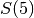
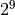

Counting summations¶
Problem 76
It is possible to write five as a sum in exactly six different ways:
- 4 + 1
- 3 + 2
- 3 + 1 + 1
- 2 + 2 + 1
- 2 + 1 + 1 + 1
- 1 + 1 + 1 + 1 + 1
How many different ways can one hundred be written as a sum of at least two positive integers?
Bad Idea: Enumerate the tree of alternative sums. The issue is that 100 has 633825300114114700748351602687 combinations of values, which reduces to smaller number of distinct values. This is . It’s not sensible to build the tree.
Period.
Explorations¶
This simplistic version doesn’t scale well. But it lets us explore the space of combinations of sums for a given total.
Enumerate all sums for a given number, n. This uses explicit sorting to make it easier to remove duplicates. That makes it very slow.
Also, these generators include an extra singleton sum, (n,), which must be discarded.
def sums_to_n_iter1(n, head=()):
"""
Raw list with duplicates, sorted into canonical order to support later removal of duplicates.
>>> list(sums_to_n_iter1(5))
[(5,), (1, 4), (1, 1, 3), (1, 1, 1, 2), (1, 1, 1, 1, 1), (1, 1, 1, 2), (1, 2, 2), (1, 1, 1, 2), (1, 1, 3), (2, 3), (1, 2, 2), (1, 1, 1, 2), (1, 2, 2), (2, 3), (1, 1, 3), (1, 4)]
"""
yield tuple(sorted(head+(n,)))
for v in range(1, n):
yield from sums_to_n_iter1(n-v, tuple(sorted(head+(v,))))
This is unsorted. It’s much harder to remove duplicates. We have to wrap this with another function that sorts and removes duplicates.
def sums_to_n_iter2_raw(n, head=()):
"""
Raw list with duplicates, not sorted.
>>> list(sums_to_n_iter2_raw(5))
[(5,), (1, 4), (1, 1, 3), (1, 1, 1, 2), (1, 1, 1, 1, 1), (1, 1, 2, 1), (1, 2, 2), (1, 2, 1, 1), (1, 3, 1), (2, 3), (2, 1, 2), (2, 1, 1, 1), (2, 2, 1), (3, 2), (3, 1, 1), (4, 1)]
"""
yield head+(n,)
for v in range(1, n):
yield from sums_to_n_iter2_raw(n-v, head+(v,))
def sums_to_n_iter2(n):
"""
Raw list with duplicates, properly sorted.
>>> list(sums_to_n_iter2(5))
[(5,), (4, 1), (3, 1, 1), (2, 1, 1, 1), (1, 1, 1, 1, 1), (2, 1, 1, 1), (2, 2, 1), (2, 1, 1, 1), (3, 1, 1), (3, 2), (2, 2, 1), (2, 1, 1, 1), (2, 2, 1), (3, 2), (3, 1, 1), (4, 1)]
"""
return [ tuple(sorted(raw, reverse=True)) for raw in sums_to_n_iter2_raw(n) ]
This is properly sorted without generating duplicates.
def sums_to_n_iter3(n, head=()):
"""
Raw list sorted in a canonical order.
>>> list(sums_to_n_iter3(5))
[(5,), (1, 1, 1, 1, 1), (2, 1, 1, 1), (2, 2, 1), (3, 2), (3, 1, 1), (4, 1)]
"""
if head and n > head[-1]:
pass
else:
yield head+(n,)
for v in range(1, n):
if head and v > head[-1]: break
yield from sums_to_n_iter3(n-v, head+(v,))
Create the minimized set of sums with more than two items. The singleton we need to discard is always first, so, we don’t really need to build a set object.
def canonical_sums1(n, generator=sums_to_n_iter3):
"""
>>> cs1= canonical_sums1(5)
>>> len(cs1)
6
>>> sorted(cs1, reverse=True)
[(4, 1), (3, 2), (3, 1, 1), (2, 2, 1), (2, 1, 1, 1), (1, 1, 1, 1, 1)]
>>> cs2= canonical_sums1(5, generator=sums_to_n_iter2)
>>> len(cs2)
6
>>> sorted(cs2, reverse=True)
[(4, 1), (3, 2), (3, 1, 1), (2, 2, 1), (2, 1, 1, 1), (1, 1, 1, 1, 1)]
>>> cs3= canonical_sums1(5, generator=sums_to_n_iter3)
>>> len(cs3)
6
>>> sorted(cs3, reverse=True)
[(4, 1), (3, 2), (3, 1, 1), (2, 2, 1), (2, 1, 1, 1), (1, 1, 1, 1, 1)]
"""
sums = set(s for s in generator(n) if len(s) >= 2)
return sums
Performance question.
def performance():
import timeit
t11= timeit.timeit('canonical_sums1(5, generator=sums_to_n_iter1)', 'from euler76 import canonical_sums1, sums_to_n_iter1')
t12= timeit.timeit('canonical_sums1(5, generator=sums_to_n_iter2)', 'from euler76 import canonical_sums1, sums_to_n_iter2')
t13= timeit.timeit('canonical_sums1(5, generator=sums_to_n_iter3)', 'from euler76 import canonical_sums1, sums_to_n_iter3')
print( 't11 = {t11}, t12 = {t12}, t13 = {t13}'.format_map(locals()) )
Analysis¶
Clearly, we can’t enumerate all possible sums to remove duplicates and determine the final count of unique summations.
The structure of the function gives us a hint as to how to proceed in locating the appropriate counts without actually enumerating all the items.
Sums which add to 5, given by .
- {(5,)} [Yes, we’re aware this is discarded later.]
- {(1,)+x for all x in S(4)}, S(4) = {(4,), (1,)+S(3), (2,)+S(1)}
- {(2,)+x for all x in S(3)}, S(3) = {(3,), (1,)+S(2)}
- {(3,)+x for all x in S(2)}, S(2) = {(2,), (1,)+S(1))}, which is redundant with values above.
- {(4,)+x for all x in S(1)}, S(1) = {(1,)}
The above is still pretty complex because we’re trying to remove duplicates early. The simplistic recursive definition doesn’t (easily) reveal duplicates. If it did, we’d see a simple Fibonacci-style relationship among the number of ways to create sums. We don’t see that when we look at the 14 ways to create a sum that adds to 7.
How quickly does the number of summations grow?
def explore1():
"""
For small sets, how does the proper number of sums grow when
compared with the number of all possible sums?
This is the count of partitions vs. compositions of a number.
"""
print( ":header: n, summations, non-unique")
for x in range(2,21):
print( x, len(canonical_sums1(x)), 2**(x-1)-1, sep=",")
explore1()
Here’s the growth:
| n | partitions | compositions |
|---|---|---|
| 2 | 1 | 1 |
| 3 | 2 | 3 |
| 4 | 4 | 7 |
| 5 | 6 | 15 |
| 6 | 10 | 31 |
| 7 | 14 | 63 |
| 8 | 21 | 127 |
| 9 | 29 | 255 |
Another Analysis¶
Another Point of view is a 9-column table with the following headings.
(1,), (1,1), (1,1,1), (1,1,1,1), (1,1,1,1,1), (2,), (2,2), (3,), (4,)
This allows us to ignorantly create all  combinations. Of these will sum to 5. Of these, 6 will be unique irrespective of ordering.
There are  combinations of 1’s, combinations of 2’s,
combinations of 3’s, etc., down to 1 combinations of all
values greater than .
combinations of 1’s, combinations of 2’s,
combinations of 3’s, etc., down to 1 combinations of all
values greater than .
This is 481 columns.
Clearly, ignorantly filling in a table of :math`2^{481}` rows is crazy.
cols = lambda n: sum(
n// x if n//x > 0 else 1 for x in range(1,n)
)
print( "Columns required for 100 numbers", cols(100) )
Partition Function¶
This is hard. Super hard. It requires some research into number theory.
See https://en.wikipedia.org/wiki/Partition_(number_theory) We’re computing the order of each partition of a given number.
This is the algorithm from Peter Luschny in https://oeis.org/wiki/User:Peter_Luschny/OddsAndEnds#How_to_compute_the_number_of_partitions_of_1.2C000.2C000.3F.
This is acceptable for numbers up to 1,000.
from functools import wraps
def CachedFunction(f):
@wraps(f)
def with_cache(n, cache={}):
if n not in cache:
cache[n] = f(n)
return cache[n]
return with_cache
is_odd = lambda x: x % 2 == 1
@CachedFunction
def A000041(n):
if n == 0: return 1
S = 0; J = n-1; k = 2
while 0 <= J:
T = A000041(J)
S = S+T if is_odd(k//2) else S-T
J -= k if is_odd(k) else k//2
k += 1
return S
__test__ = {'A000041': """
>>> A000041(5)-1
6
>>> A000041(20)-1
626
""",
}
Solution¶
def answer1():
return A000041(100)-1
Confirm the answer.
def confirm( ans ):
assert ans == 190569291, "{0!r} Incorrect".format(ans)
Create some output.
if __name__ == "__main__":
import doctest, sys
results= doctest.testmod()
if results.failed: sys.exit(results.failed)
#performance()
ans= answer1()
confirm( ans )
print( "The number of different ways 100 can be written as a sum:", ans )